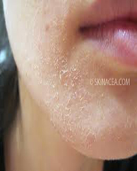

Dry Skin on the Face

1. Start the day with this – take half a cup of un-boiled milk at room temperature. Dip a pad of cotton wool and generously apply on the face and neck. Leave it on for 15 – 20 minutes and wash off. After a shower, pat the face dry and apply a moisturizer while the face is still moist.
2. Splash some water from a tender coconut whenever possible. Do this at least twice a day when the dryness is acute as coconut water is one of the best natural moisturizers. Leave it on for 15 minutes before washing off.
3. Mash ½ an avocado and mix the pulp with 2 teaspoons of honey. Mix it well and smear on the face for 10 minutes. Wash with warm water.
4. Yogurt applied on the face and neck works in gently removing flakes of dry skin. Yogurt has lactic acid which soothes and refreshes the skin, and calms down the itchiness and skin rashes. Some ripe papaya pulp can be added to the yogurt and use it as a mask.
5. Pumpkin has enzymes which are extremely good for a smooth satiny skin. Peel the pumpkin and grate the fleshy part, add a pinch of cinnamon powder to this, let it soak for a few minutes and use as a face mask.
6. Clean off make up with cotton pads dipped in olive oil - it works on the skin as a moisturizer and adds a layer of fatty acids which don’t deplete the skin in any way.
7. Use a gentle face wash rather than soap and avoid hot water which can be harsh on a sensitive dry skin.